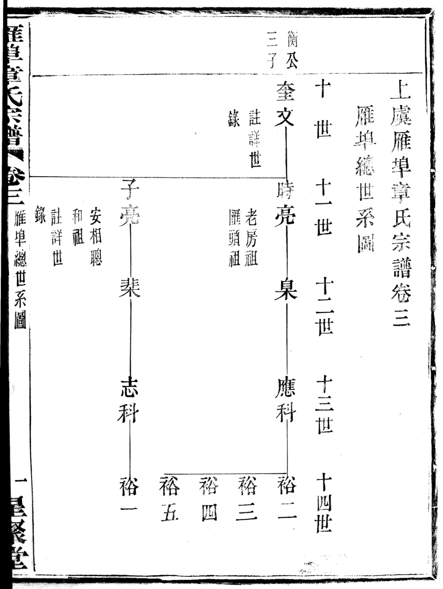
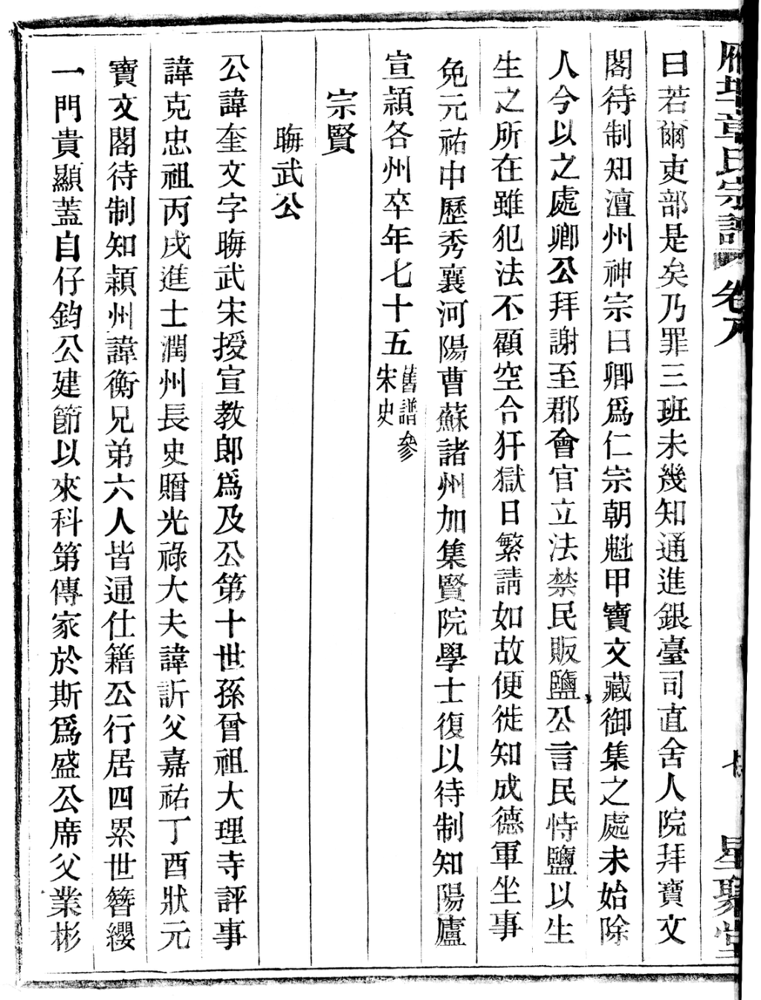
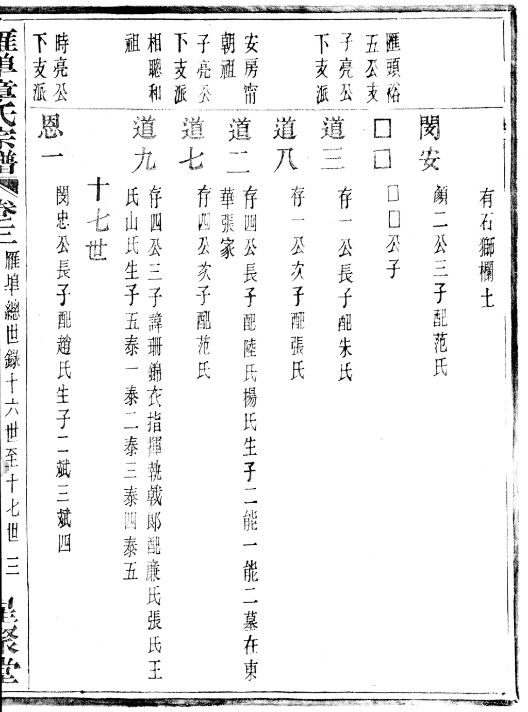
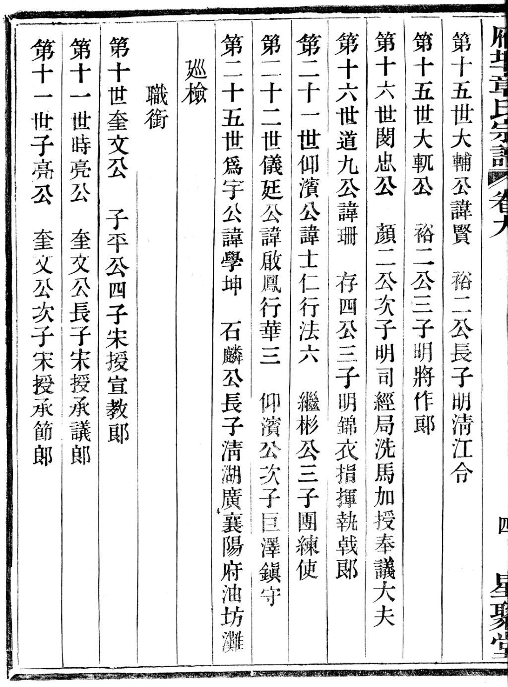
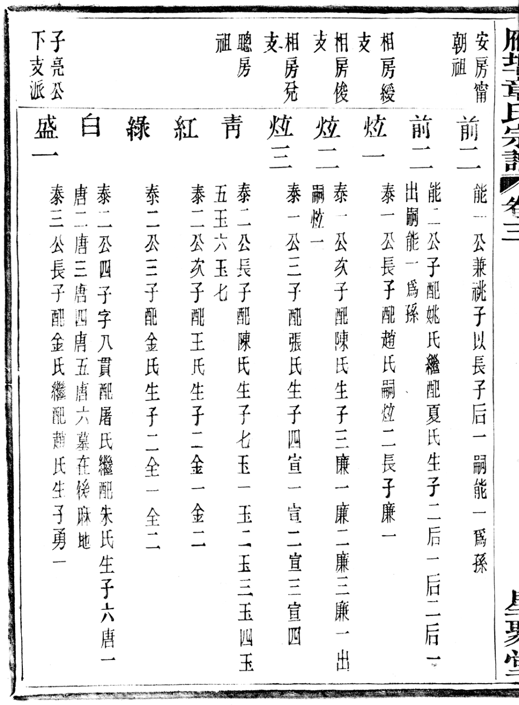
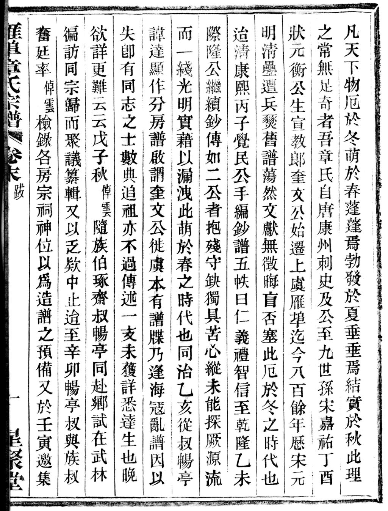
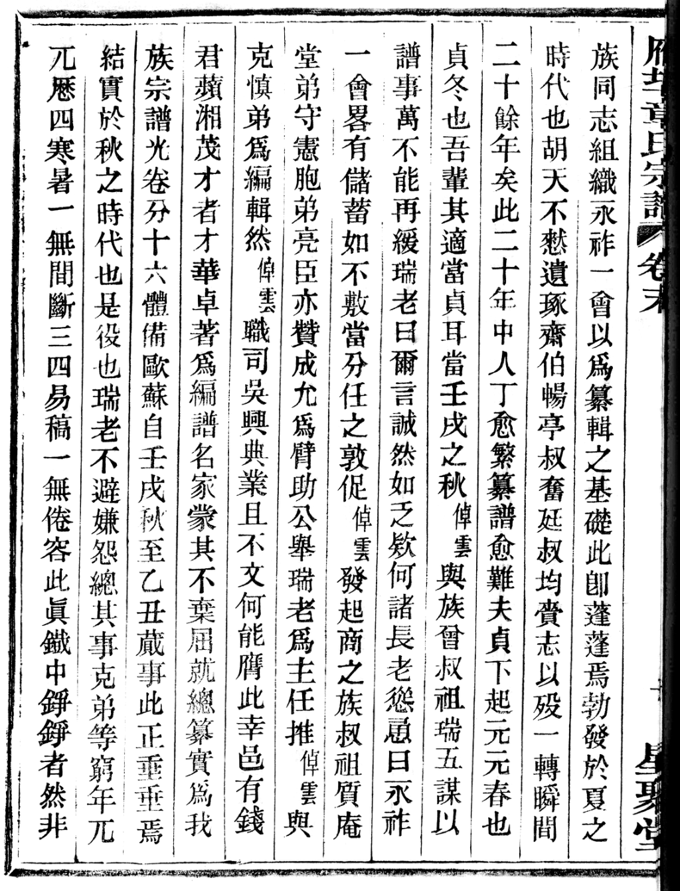
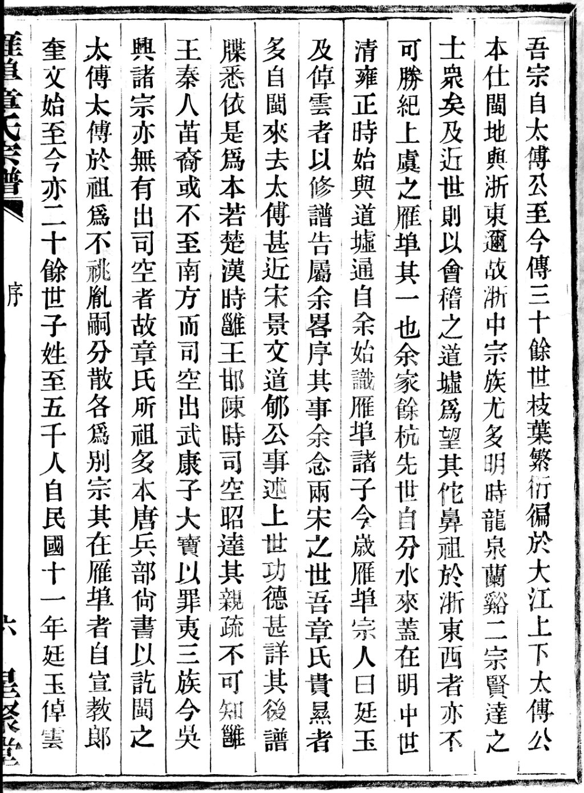

雁埠章氏 · 源流与分房考
标 ★ 者为调原谱影像逐字核读，余为古籍 OCR 文本交叉比对
〇、一句话回答
| 问 | 答 |
|---|---|
| 奎文公何时迁来雁埠？ | 谱载「迄今八百餘年，厯宋元明清」（卷末跋）。奎文公为宋嘉祐二年（1057）状元章衡之第四子，以宦遊自福建浦城徙居上虞雁埠；民国《松夏志》《绍兴府志》系其事于宋绍圣初（1094，章衡时知越州）。按代际速率反推，实际迁居约在南宋（十二世纪末至十三世纪）。 详见专题报告《奎文公身世考·谱外史料互证》 |
| 道九公生活在什么年代？ | 谱标「明·錦衣指揮執戟郎」。按代际速率反推，约在元末明初（十四世纪中后期）。 |
| 分房是怎么回事？ | 不是行政划分，是"始迁祖之下按支派分宗立祠"。奎文公二子分两大枝 —— 长子時亮公为老房，次子子亮公一系再析为安、相、聰、和四房。五房各立宗祠，故村内共有四座章氏宗祠。你家（受田公）属 相房 → 俊支。 |
一、奎文公何时迁来雁埠
1.1 谱内三个年代坐标
谱里没有给奎文公写生卒年（卷三世录原文：「生卒佚，壽七十」），但给了三个可用的年代坐标：
| # | 原文 | 出处 |
|---|---|---|
| ① | 「吾章氏自唐康州刺史及公，至九世孫宋嘉祐丁酉狀元衡公，生宣教郎奎文公，始遷上虞雁埠，迄今八百餘年，厯宋元明清，疉遭兵燹，舊譜蕩然」 | 册10 卷末〈跋〉p150 ★ |
| ② | 「獨念吾奎文公宅兹而後未有譜牒者七八百年」 | 册01 卷二〈序〉p16 ★ |
| ③ | 「自宣教郎奎文公始遷上虞雁埠，迄今八百餘年，子姓至四五千人」 | 册01 卷一〈序〉 |
→ 谱内自述：「八百餘年」与「七八百年」两说，换算即公元 1125—1225 年间，落在宋室南渡前后。
1.2 迁居的两条原因（须分清）
| 原因 | 原文 | 出处 |
|---|---|---|
| 主因 · 宦遊 | 「世居浦城，公以宦遊遂家於上虞雁埠，緜緜延延，迄今二十五傳，環雁埠居者千百家」 | 册09 卷八〈晦武公傳〉p63 ★ |
| 性情 · 退居 | 奎文公「澹泊其心，高尚其志，承累世簪纓，不喜繁囂，退居僻壤，擇雁埠爲廬墓之鄉」 | 册01 卷一〈序〉 |
1.3 世系坐标：他是"浦城章氏"的第十世
| 原文 | 出处 |
|---|---|
| 「公諱奎文，字晦武，宋授宣教郎，爲及公第十世孫」 | 册09 卷八〈傳〉p63 ★ |
| 「第十世 雁埠始祖 奎文」（版心） | 册01 卷三〈雁埠總世錄〉p144 ★ |
| 「吾族自康州刺史及公傳十世至宣教郎奎文公，由浦城遷居雁埠」 | 册01 卷一〈序〉 |
浦城章氏世系：唐人 章及（康州刺史）→ 章修 → 章仔鈞（太傅，练夫人之夫，浦城章氏共祖）→ 章仁嵩 → 章文竦 → 章承訓 → 章克忠 → 章訢 → 章衡（九世，状元）→ 奎文公（十世，迁雁埠）。
1.4 代际速率反推：落在南宋
谱里虽未记奎文公生卒，但下游有硬年份，可用"每代约三十年"的常规速率反推：
| 世次 | 名 | 生年 | 依据 |
|---|---|---|---|
| 24 | 俊七公（諱軻賢） | 约 1645 | 其三子日彰「生康熙十二年癸丑」（1673），故父约生 1645 |
| 25 | 雅十一公 | 约 1665 | 俊七公次子 |
| 30 | 志緒公 | 1841 | 谱载「生道光二十一年辛丑」 |
| 31 | 齊堯公 | 1858 | 谱载「生咸豐八年戊午」 |
| 32 | 受田公 | 1886 | 谱载「生光緒十二年丙戌」 |
| 35 | （杰群辈） | 1990 | 口传 |
反推：
- 以 24 世（约 1645）上推：24 → 10 世共 14 代，
1645 − 14×30 ≈ 1225年 - 以 35 世（1990）上推：35 → 10 世共 25 代，
1990 − 25×30 ≈ 1240年
两条独立路径都指向 12 世纪末至 13 世纪，即南宋中后期。
1.5 存疑与谱外查证（2026-10-10 修订）
〔一〕谱内自承的两处异说
册01 卷三 p144 世录原文（★已核图）：
- 同一页里既写「衡公三子」，又注「公行四」；
- 册09〈職銜〉表作「子平公四子」；册09 卷八〈晦武公傳〉作「兄弟六人皆通仕籍，公行居四」。
〔二〕谱外查证：「奎文＝章衡第四子」成立
本谱 p144 所引「會譜初編卷六」，即民国八年（1919，早于本谱六年）铅印的 《章氏会谱德庆初编》三十卷（章贻贤辑，苏浙皖湘鄂各宗之会谱，上海图书馆藏）。其卷六〈第一至十世世系表〉原文：
七路互证：
| 来源 | 记载 |
|---|---|
| 《章氏会谱德庆初编》卷六（1919） | 「奎文 衡公四子……上虞祖」 |
| 维基百科·章衡（据《宋史》卷347 等） | 來祖章仔鈞→玄祖章仁嵩→高祖章文竦→曾祖章承訓→祖章克忠→父章訢 |
| 民国《松夏志》 | 「章氏，世居浦城，自宣教郎奎文，宋紹聖初以父衡知越州，遂家雁埠」 |
| 《绍兴府志》 | 「章衡，哲宗紹聖元年（1094）知越州」 |
| 《上虞地名文化寻迹》（2023，中国文史出版社） | 「……其子章奎文定居於雁埠」 |
| 23 魔方祖源库（O-MF61941） | 「始祖章奎文……谱载为浦城章及十世孙、章衡之子」 |
| 《浦城章氏世系源流暨分遷各支記》 | 上虞等县「则第四子仁嵩公之裔也」 |
惟 23 魔方一处作「三子」，与其同段「生四子」自相矛盾，当系转录之误。
〔三〕仍未弥合的硬矛盾：第 10—16 世的代际年数
| 环节 | 年数 |
|---|---|
| 章衡卒 1098/1099；其第四子约生 | 1060—1080 |
| 谱第 16 世道九公 | 谱标「明·錦衣指揮執戟郎」（锦衣卫设于洪武十五年 1382）；由受田公（32世·1886）上推亦应在 14—15 世纪 |
| 奎文→道九 | 谱载仅 6 代，却要跨约 300 年（约 50 年/代）——显然不合 |
两种可能（不为古人强作断语）：(a) 第 11—15 世之间脱代（宋末元初兵燹「舊譜蕩然」，卷末〈跋〉自承「或一人而名號化作兩世，或父下而不詳子系」）——则道九公实为奎文公第十至十一代孙；(b) 「奎文为衡子」系浦城章氏系统的早期联宗上接。
二、道九公生活在什么年代
2.1 谱里怎么标
另：墓在正宗菴面前麻地（正宗菴为雁埠村内旧庵堂，全谱作墓地坐标者六十余处）。
2.2 代际速率反推：元末明初
16 → 25 世（约 1665）共 9 代，1665 − 9×30 ≈ 1395 年（明洪武年间）。区间测算：
| 每代间隔 | 推得年代 | 对应 |
|---|---|---|
| 25 年 | 约 1440 年 | 明宣德 |
| 30 年 | 约 1395 年 | 明洪武 |
| 35 年 | 约 1350 年 | 元至正 |
→ 综合：元末明初（十四世纪中后期）。
2.3 官职佐证：锦衣卫是明代官制
锦衣卫设于明洪武十五年（1382），"锦衣指挥"为明代特有武职。谱内第十四大—十六世多人任明官，可互相印证：
| 世次 | 名 | 官职 | 出处 |
|---|---|---|---|
| 15 | 大輔公 | 「仕明爲清江令」 | 册09 卷八传 |
| 16 | 閔忠公 | 「明司經局洗馬，加授奉議大夫」 | 册09〈職銜〉 |
| 16 | 道九公 | 「明錦衣指揮執戟郎」 | 册09〈職銜〉 |
→ 三处同标"明"，且都落在第十五、十六世，彼此自洽：道九公与其同辈閔忠公，均为明初人。
2.4 道九公为什么重要
- 他是"相、聰、和"三房共祖 —— 五子中泰一（相房）、泰二（聰房）、泰五（和房）各开一房，故册01 p148 版心在其名下直标「相聰和祖」；
- 村内"相聰和三房宗祠"即三房合祠，卷十三〈祠產〉首条祀产即「九都八里章 · 章道九公祭 · 雁莊承糧」；
- 他是你家（受田公）的直系先祖 —— 受田公一支的支派全称正是「相房 · 道九公下 · 泰一公子 · 炫二公俊支派」（册08 卷五中 世录标题，逐页可见）。
三、分房是怎么回事
3.1 一句话原理
"分房" = 始迁祖以下按支派分宗立祠。它既是血缘分支（谁是谁的子孙），也是祭祀与族产单位（各房有各房的宗祠、祀田、房谱、房内排行）。族人日常自称"我是相房俊支的"，指的正是这两重身份。
3.2 五房总图
据册01 卷三〈雁埠總世錄〉版心栏标逐页核出（p144 / p148 / p150 / p151 ★）。
- 十世奎文公雁埠始祖 · 宣教郎 · 由福建浦城徙居上虞雁埠
- 十一世時亮公奎文公长子 · 承議郎老 房 祖
- 十二—十四世臬 → 應科 → 裕二·裕三·裕四·裕五
- 十五—十六世裕二 → 大輔（明清江令）…老房前支老房後支
- 十五—十六世裕四 → 顏二 → 閔文·閔忠·閔安
- 十一世子亮公奎文公次子 · 承節郎匯頭祖安·相·聰·和 四房之祖
- 十二—十四世棐 → 志科 → 裕一
- 十五—十六世存一 → 道三·道八匯頭裕五公支
- 十五世存四公迪功郎安·相·聰·和 四房共祖
- 十六世道二公安 房 祖
- 十七世能一 · 能二甯支朝支
- 十六世道七公
- 十六世道九公諱珊 · 明·錦衣指揮執戟郎相·聰·和 三房共祖
- 十七世泰一公相 房 祖
- 十八世炫一綬支
- 十八世炫二俊支 ★ 你家（受田公）所属
- 十九—三十二世廉二 → 仁二 → 相二 → 炳一 → 應二 → 俊七 → 雅十一 → 銘廿 → 檢三十七 → 祖善 → 宗貞 → 志緒 → 齊堯 → 受田
- 十八世炫三兌支
- 十七世泰二公聰 房 祖子：靑·紅·綠·白
- 十七世泰三公子：盛一·盛二
- 十七世泰四公
- 十七世泰五公和 房 祖子：輝一·輝二·輝三 → 象支·昇支·恭支
- 十七世泰一公相 房 祖
- 十六世道二公安 房 祖
- 十二—十四世棐 → 志科 → 裕一
- 十一世時亮公奎文公长子 · 承議郎老 房 祖
3.3 五房 ↔ 村内四座宗祠
| 祠堂 | 所出 | 出处 |
|---|---|---|
| 雁埠老房支宗祠 | 奎文公长子 時亮公 一系 | 卷十二〈營建〉、卷十三〈祠產〉 |
| 雁埠安房甯支宗祠 | 存四公长子 道二公 一系（甯支） | 同上 |
| 雁埠安房朝支宗祠 | 同上（朝支） | 同上 |
| 雁埠相聰和三房宗祠 | 存四公三子 道九公 一系 ← 你家所属 | 同上 |
四祠在卷一〈圖目〉中各有祠堂图（册01 p31）。
3.4 分房的三次文献节点
族谱屡毁于兵燹，分房谱系是分三次才理清的（册10 卷末〈跋〉p150–152 ★）：
| 时间 | 事 | 原文要点 |
|---|---|---|
| 清康熙三十五年丙子（1696） | 觉民公手编钞谱五帙 | 「覺民公手編鈔譜五帙曰仁義禮智信」（以"仁義禮智信"为五册编号，即俗称"五房钞谱"） |
| 清乾隆四十年乙未（1775） | 際隆公继续钞传 | 「續鈔傳」 |
| 清同治/光绪间 | 畅亭公（諱達顯）作〈分房譜啟〉 | 「諱達顯作分房譜啟，謂奎文公徒虞本有譜牒，乃逢海寇亂，譜因以失」 |
| 民国十一—十四年（1922—1925） | 正式纂修十六卷宗谱 | 壬戌秋起、乙丑夏蕆事，邑人钱蘋湘总纂，「卷分十六，體備歐蘇」 |
3.5 你家在分房图中的坐标
→ 道九(16)【相聰和祖】→ 泰一(17)【相房祖】→ 炫二(18)【俊支】
→ 廉二(19) → 仁二(20) → 相二(21) → 炳一(22) → 應二(23)
→ 俊七(24) → 雅十一(25) → 銘廿(26) → 檢三十七(27) → 祖善(28)
→ 宗貞(29) → 志緒(30) → 齊堯(31) → 受田(32)【＝章寿田，太爷爷】
→ 开文(33) → 新华(34) → 杰群(35) → 贤逸(36)
支派全称：「相房 · 道九公下 · 泰一公子 · 炫二公俊支派」——即：相房之下、道九公的泰一公一脉、再由炫二公分出的"俊支"。
祠堂归属：村内相聰和三房宗祠。
四、代际速率检验表（方法论）
谱内奎文公、道九公均未记生卒年，故只能"以硬年份锚点 + 常规代际速率"双向校验：
| 世次 | 名 | 生年 | 依据 |
|---|---|---|---|
| 10 | 奎文公 | 生卒佚 | 谱明载"生卒佚，壽七十" |
| 16 | 道九公 | 未载 | 谱标"明" |
| 24 | 俊七公 | 约 1645 | 据其子日彰生 1673 反推 |
| 25 | 雅十一公 | 约 1665 | 俊七公次子 |
| 30 | 志緒公 | 1841 | 确 |
| 31 | 齊堯公 | 1858 | 确 |
| 32 | 受田公 | 1886 | 确 |
| 35 | 杰群 | 1990 | 口传 |
- 每代按 30 年计：10 世 ≈ 1225；16 世 ≈ 1395
- 该法假定"平均三十年一代"，战乱、晚婚、早卒会拉长或缩短实际间隔，故只取世纪级（南宋 / 元末明初），不取具体年份。
→ 经谱外查证，「奎文＝章衡第四子」已由《章氏会谱德庆初编》卷六等多源证实，不能视为攀附（见 §1.5）；因此本矛盾的正解，应是第 11—15 世之间脱代，而非上接之误。
五、附记：谱首的两篇余杭章氏序
谱首除民国十四年乙丑（1925）本族族长的两篇序外，另有两篇余杭章氏宗人的序（册01 卷一 p13–15 ★已核图）：
| 序 | 落款 | 原句 |
|---|---|---|
| 其一 | 「餘杭宗子 籛 序，時年七十四」 | —— |
| 其二 | 「民國十四年乙丑三月 日 炳麟」 | 「余家居餘杭，先世自分水來，蓋在明中世」；「吾宗自太傅公至今傳三十餘世，枝葉繁衍徧於大江上下」 |
- 两序都自称章氏，且溯至"太傅公"（即浦城章仔鈞）——说明余杭章氏与上虞雁埠章氏是联宗通谱的关系。
- "炳麟"一篇自述"余家餘杭，先世自分水來"，与章炳麟（太炎，1869—1936，浙江余杭人）的家世相合，疑即章太炎所撰。此为待考线索，不作定论。
六、原谱影像（点开可放大核对）









